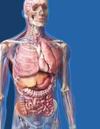
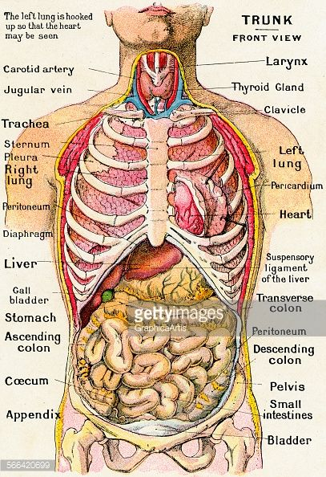
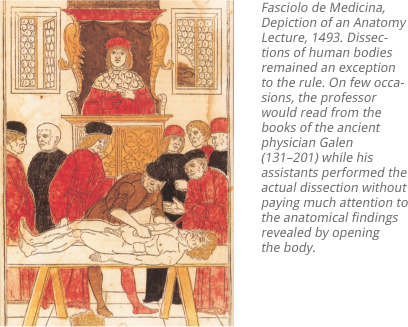
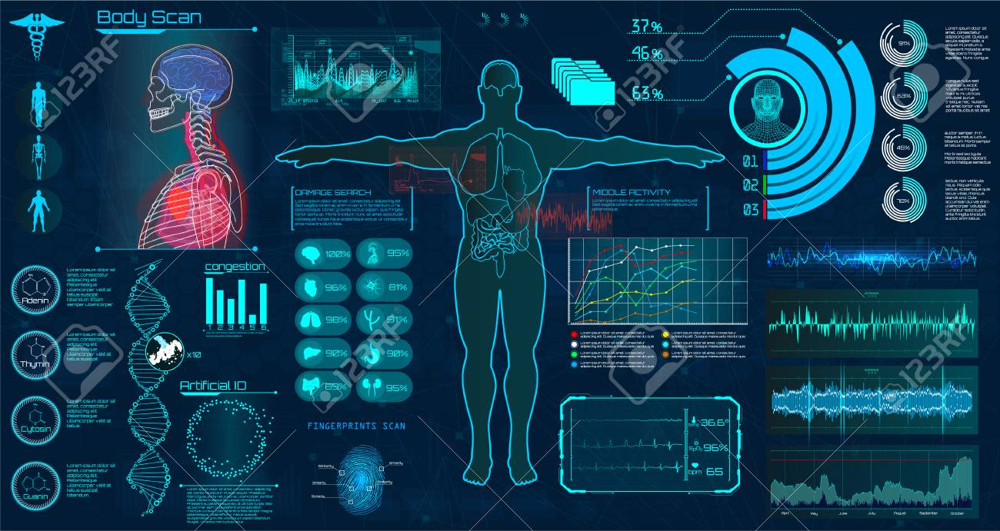

ANATOMY
Anatomy is the branch of biology concerned with the study of thestructure of organisms and their parts.
it includes their systems, organs and tissues. It includes the appearance and position of the various parts,
the materials from which they are composed, their locations and their relationships with other parts. an
anatomist is concerned with the shape, size, position, structure, blood supply and innervation of an organ

HUMAN ANATOMY
Human anatomy is one of the essential basic sciences that are applied in medicine.
The body is studied by health professionals, physiologists, anatomists, and by artists to assist
them in their work. Human anatomy is the study of the shape and form of
the human body. The human body has four limbs, a head and a neck. The body's shape is
determined by a strong skeleton made of bone and cartilage, surrounded by fat,
muscle, connective tissue, organs, and other structures. The spine at the back of the
skeleton contains the flexible vertebral column which surrounds the spinal cord, which is a
collection of nerve fibres connecting the brain to the rest of the body.
Nerves connect the spinal cord and brain to the rest of the body. . Blood
vessels carry blood throughout the body, which moves because of the beating of the heart.

HISTORY OF ANATOMY
. The history of anatomy is characterized by a progressive understanding of the functions
of the organs and structures of the human body. Methods have also improved dramatically,
advancing from the examination of animals by dissection of carcasses and cadavers
(corpses) to 20th century medical imaging techniques including X-ray, ultrasound,
and magnetic resonance imaging. Methods used include dissection, and endoscopy,
Angiography using X-rays or magnetic resonance angiography are methods to
visualize blood vessels. Ancient Greek anatomy and physiology underwent great changes and
advances throughout the early medieval world. Over time, this medical practice
expanded by a continually developing understanding of the functions of organs
and structures in the body. Phenomenal anatomical observations of the human body
were made, which have contributed towards the understanding of the brain, eye, liver,
reproductive organs and the nervous system.

MODERN ANATOMY
Before the modern medical era, the main means for studying the internal structures
of the body were dissection of the dead and inspection, palpation and auscultation of
the living. It was the advent of microscopy that opened up an understanding of the
building blocks that constituted living tissues. Technical advances in the development of
achromatic lenses increased the resolving power of the microscope and around 1839,
Matthias Jakob Schleiden and Theodor Schwann identified that cells were the fundamental
unit of organization of all living things. Staining techniques using artificial dyes were
established to help distinguish between different types of tissue. The invention of
the electron microscope brought a great advance in resolution power and
allowed research into the ultrastructure of cells and the organelles and other
structures within them. In the 1950s, the use of X-ray diffraction for studying
the crystal structures of proteins, nucleic acids and other biological molecules gave rise to a
new field of molecular anatomy.
